대표님 레퍼런스에서 가져온 다섯 가지
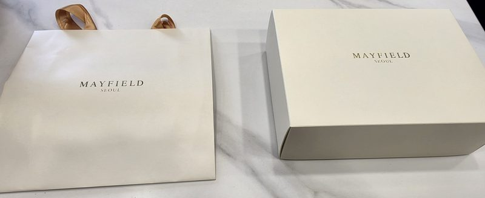
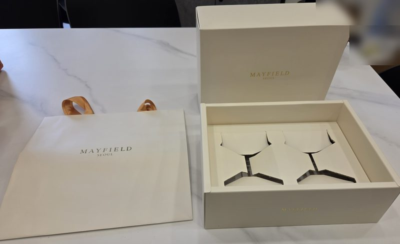
- 1색은 하나
상자·속지·쇼핑백이 모두 같은 아이보리입니다.
→ 순수푼도 한 가지 색으로 통일했습니다.
- 2로고는 작게, 금박으로, 가운데
둘레를 넉넉히 비워 둔 게 고급스러움을 만듭니다.
→ 그림·무늬를 모두 빼고 이름만 올렸습니다.
- 3이름 + 아래 작은 줄
클래식한 명조 글자로 'MAYFIELD', 아래에 작게 'SEOUL'.
→ '순수푼' 아래에 작게 'SUNSUPUN'.
- 4쇼핑백 손잡이는 새틴 리본
금색 새틴 리본을 고리로 달았습니다.
→ 그대로 쓰고, 안마다 리본 색만 달리했습니다.
- 5속지는 제품 모양대로 따냄
잔 두 개 모양으로 판지를 따내, 넣으면 딱 맞습니다.
→ 호두정과·그래놀라 통 두 개 모양으로 따냈습니다.
레퍼런스 상자는 다른 회사 제품이라 구성·재질만 참고했고, 글자·로고는 쓰지 않았습니다.
로고 글자 — 두 가지 중 고르기
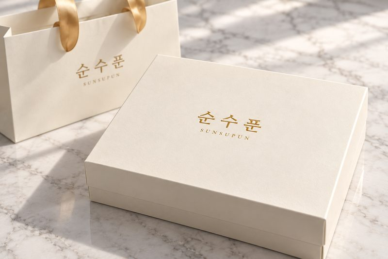
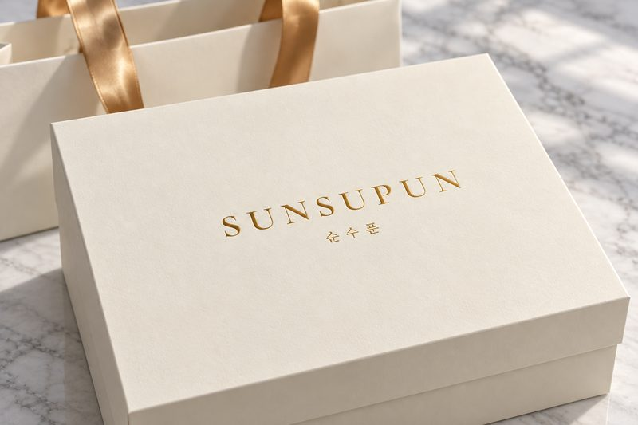
- 영문은 국어의 로마자 표기법대로 'SUNSUPUN'(순 sun · 수 su · 푼 pun)으로 적었습니다. 'SOON SOO POON'은 'POON'이 영어권 비속어라 피했습니다(위키낱말사전).
- 글꼴은 시안용 무료 글꼴(나눔명조·코모런트 가라몬드)입니다. 정하시면 이름 글자를 전용으로 다듬고, 상표 출원 전에 검색부터 합니다.
아이보리 × 금색 리본
대표님 레퍼런스와 가장 가깝게 만든 기본안입니다. 아이보리 상자와 쇼핑백에 금박 이름만 올리고, 손잡이는 금색 새틴 리본입니다. 열면 호두정과·그래놀라 통 두 개가 모양대로 따낸 속지에 누워 있습니다.
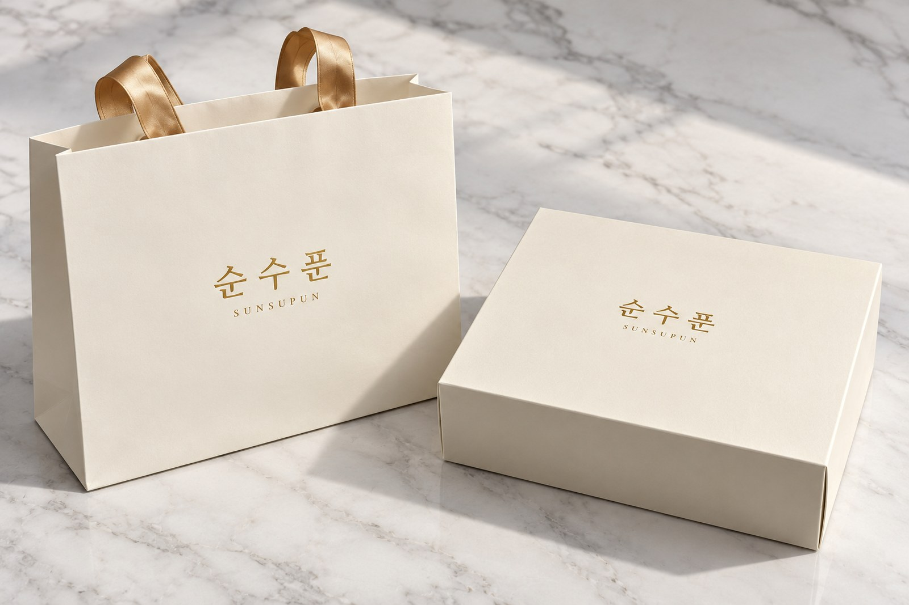
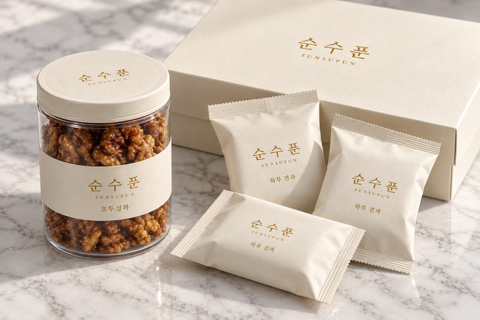
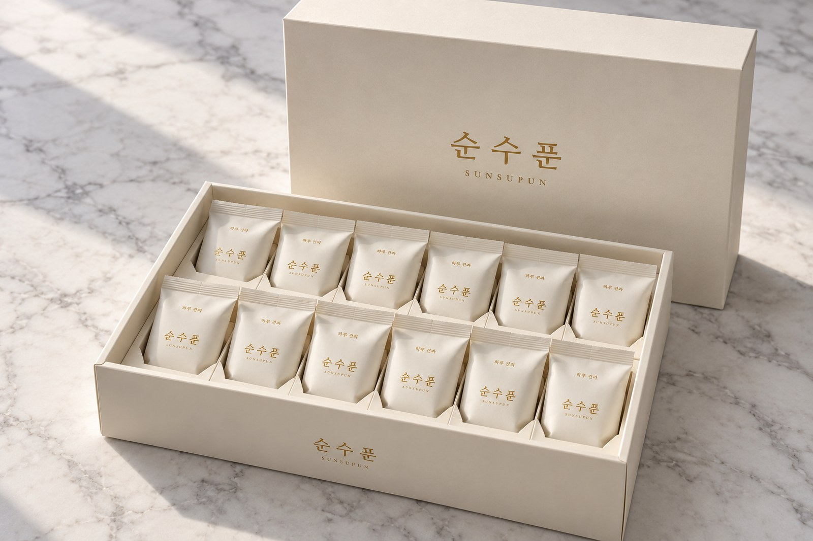
- 첫인상호텔 선물처럼 단정하고 고급스럽다
- 우리만의 표시이름 글자 하나 — 가장 담백하다
- 통·한 봉아이보리 띠 라벨·봉지에 금박 이름
- 만드는 부담네 안 중 가장 낮음 — 아이보리 특수지 + 금박 + 속지 칼선
- 아쉬운 점레퍼런스와 많이 닮아 순수푼만의 표시는 약하다
아이보리 × 초콜릿 리본
같은 아이보리에 초콜릿색 리본을 더했습니다. 상자를 리본으로 묶어 받는 순간 '선물'이라는 느낌이 가장 크고, 초콜릿색이 호두정과 빛깔과도 이어집니다.
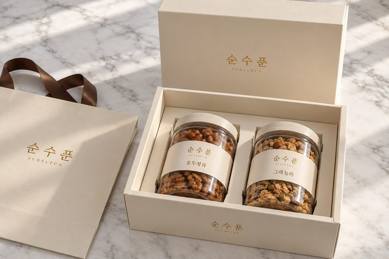
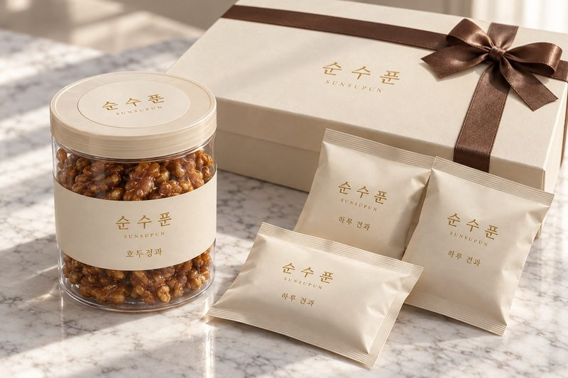
- 첫인상따뜻하고, 선물 받았다는 느낌이 크다
- 우리만의 표시초콜릿색 리본
- 통·한 봉1안과 같음
- 만드는 부담1안 + 세트마다 리본을 손으로 묶는 작업
- 아쉬운 점리본 묶는 손이 들어 단가·포장 시간이 늘어난다
화이트 펄 × 호두 형압
조금 더 하얀 펄 종이에, 뚜껑 가운데 호두 한 알을 잉크 없이 눌러 올렸습니다(형압). 빛에 따라 호두가 떠오르고 손끝에 만져집니다. 견과 브랜드라는 게 말없이 보입니다.
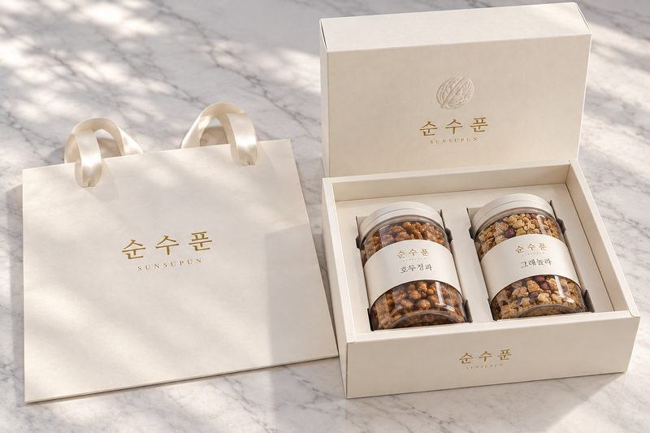
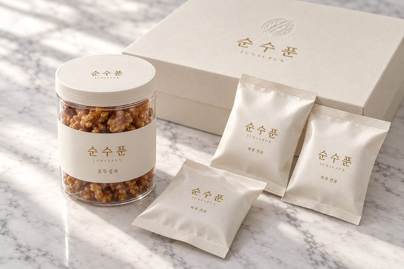
- 첫인상가장 깨끗하고 정갈하다
- 우리만의 표시호두 형압 — 견과 브랜드인 게 바로 보인다
- 통·한 봉흰 띠 라벨 · 펄 봉지
- 만드는 부담1안 + 형압 동판 1회
- 아쉬운 점흰색이라 손때·얼룩이 잘 보인다
샌드 베이지
상자와 쇼핑백을 볶은 견과 빛에 가까운 샌드 베이지로 바꾸고, 속지만 아이보리로 두었습니다. 열었을 때 안이 환하게 밝아지고, 먹을거리다운 따뜻함이 있습니다.
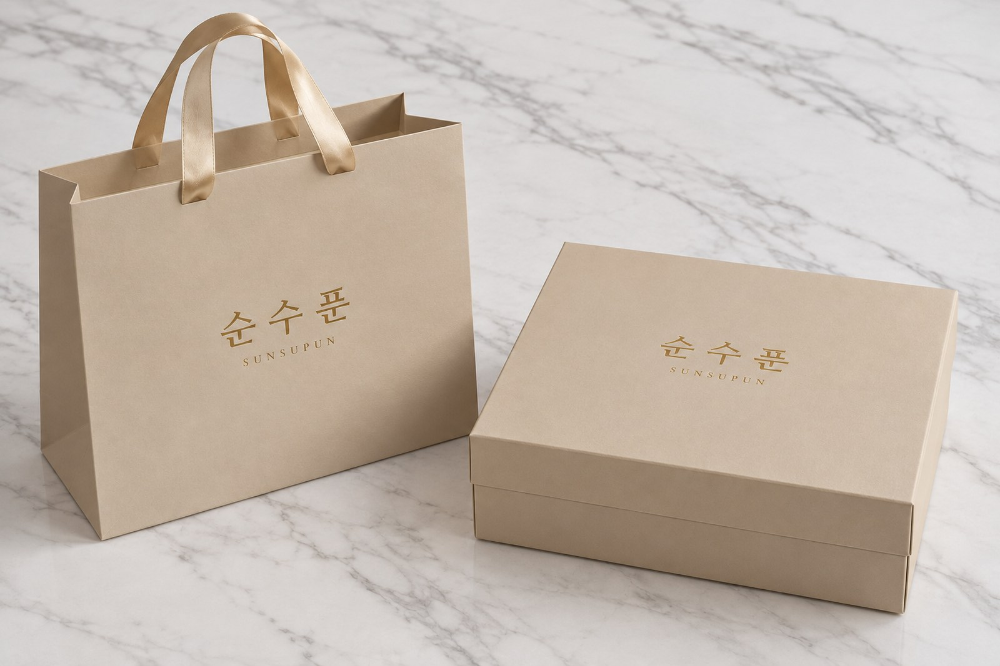
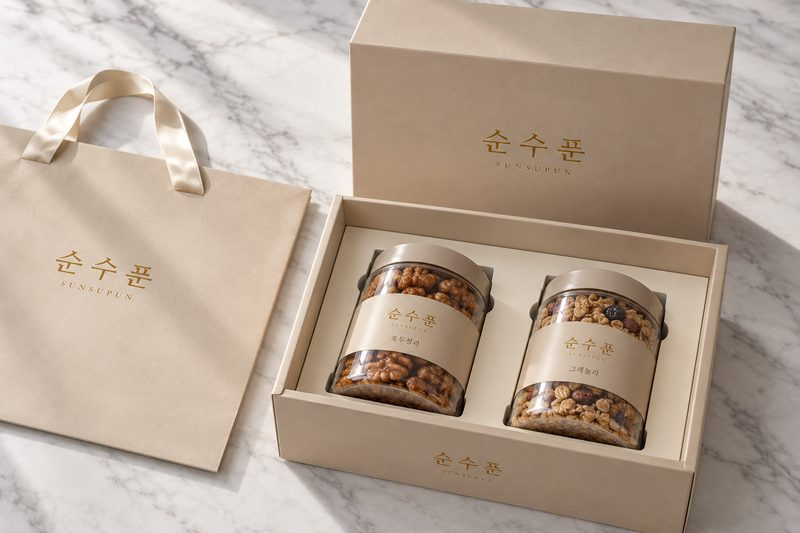
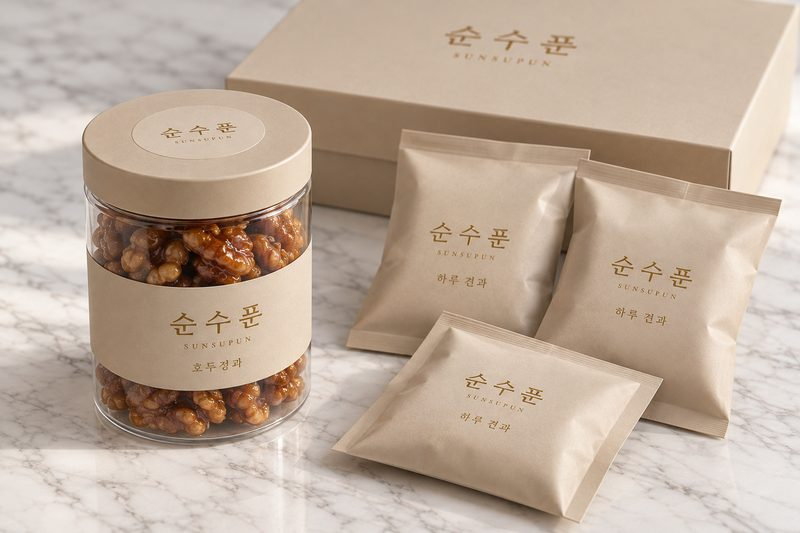
- 첫인상차분하고 따뜻하다, 먹을거리 느낌
- 우리만의 표시샌드 베이지 색
- 통·한 봉베이지 뚜껑·라벨·봉지
- 만드는 부담1안과 같음(색지만 다름), 베이지 뚜껑은 색 맞춤 확인
- 아쉬운 점레퍼런스(아이보리)보다 덜 화사하다
한눈에 비교
| 1안 아이보리 × 금색 리본 | 2안 아이보리 × 초콜릿 리본 | 3안 화이트 펄 × 호두 형압 | 4안 샌드 베이지 | |
|---|---|---|---|---|
| 첫인상 | 호텔 선물처럼 단정하고 고급스럽다 | 따뜻하고, 선물 받았다는 느낌이 크다 | 가장 깨끗하고 정갈하다 | 차분하고 따뜻하다, 먹을거리 느낌 |
| 우리만의 표시 | 이름 글자 하나 — 가장 담백하다 | 초콜릿색 리본 | 호두 형압 — 견과 브랜드인 게 바로 보인다 | 샌드 베이지 색 |
| 통·한 봉 | 아이보리 띠 라벨·봉지에 금박 이름 | 1안과 같음 | 흰 띠 라벨 · 펄 봉지 | 베이지 뚜껑·라벨·봉지 |
| 만드는 부담 | 네 안 중 가장 낮음 — 아이보리 특수지 + 금박 + 속지 칼선 | 1안 + 세트마다 리본을 손으로 묶는 작업 | 1안 + 형압 동판 1회 | 1안과 같음(색지만 다름), 베이지 뚜껑은 색 맞춤 확인 |
| 아쉬운 점 | 레퍼런스와 많이 닮아 순수푼만의 표시는 약하다 | 리본 묶는 손이 들어 단가·포장 시간이 늘어난다 | 흰색이라 손때·얼룩이 잘 보인다 | 레퍼런스(아이보리)보다 덜 화사하다 |
고르실 때 참고
레퍼런스 그대로, 가장 안전하게 — 1안. 대표님이 고르신 결과 가장 같고, 만드는 부담도 가장 낮습니다.
받는 순간 '선물'이 느껴지게 — 2안. 리본 하나로 선물 느낌이 크게 올라갑니다.
견과 브랜드라는 걸 은근히 보여 주려면 — 3안. 호두 형압이 말없이 알려 줍니다.
먹을거리답게 따뜻하게 — 4안. 견과 빛을 닮은 색이라 음식 선물로 자연스럽습니다.
섞어서 고르셔도 됩니다. 예: 1안 색 + 3안 호두 형압, 4안 색 + 영문 로고.
이대로 만들 수 있나요? — 네, 그대로 됩니다
네 안 모두 고급 선물상자에서 가장 흔한 가공(특수지 하드박스·금박·칼선 따내기·리본 쇼핑백)만 씁니다. 지난 시안들(엽전·보름달·자개 등)보다 공정이 단순해, 만드는 부담이 적습니다. 처음 한 번 드는 것은 칼선 목형과 금박(형압) 동판뿐입니다.
| 부분 | 만드는 방법 | 처음 한 번 드는 것 |
|---|---|---|
| 상자 | 두꺼운 판지(합지 2mm)를 특수지로 감싼 뚜껑·몸통 분리형(천지함) 하드박스 | 없음(색은 특수지 견본에서 고름) |
| 속지 — 모양대로 따내기 | 판지를 통 모양 칼(목형)로 따내고, 따낸 날개는 아래로 접어 통을 받칩니다. 레퍼런스의 잔 모양 구멍과 같은 방식 | 칼선 목형 |
| 금박 로고 | 동판에 열을 가해 금박을 찍음 — 상자 뚜껑·몸통 앞, 쇼핑백, 라벨 | 금박 동판(크기별) |
| 호두 형압(3안) | 잉크 없이 동판으로 눌러 도드라지게 | 형압 동판 |
| 쇼핑백 | 무광 특수지 + 금박 + 새틴 리본 손잡이 고리, 바닥 보강판 | 금박 동판 |
| 통 라벨·뚜껑 스티커 | 무광 아이보리 라벨지 + 금박, 제품명만 바꿔 공용 | 금박 동판 |
| 한 봉 파우치 | 무광 식품용 필름. 금색은 소량 디지털 인쇄와 대량 인쇄의 방식이 달라 업체 확인 | 디지털은 판 없음 / 대량은 인쇄 동판 |
| 통 | 투명 PET 원형 통 + 기성 흰 뚜껑. 아이보리·베이지 뚜껑은 색 맞춤 최소 수량 확인, 안 되면 흰 뚜껑 + 금박 스티커 | 없음 |
다음 단계
- ① 안·로고 고르기네 안 중 하나(또는 섞기)와 로고 글자(한글 크게 / 영문 크게)를 정합니다.
- ② 통 크기 확정용기 견본을 받아 실제 지름·높이를 잽니다. 라벨·속지 치수가 여기서 정해집니다.
- ③ 상자·쇼핑백 견본 1개씩금박 색·종이 색·속지에 통이 딱 맞는지 실물로 확인합니다.
- ④ 견적 비교 후 본생산부분마다 2~3곳 견적을 받아 단가·납기·최소 수량을 비교해 정합니다.
업체에 연락하거나 주문하지는 않았습니다. 요청서를 보낼 곳·수량은 대표님 확인 후 정합니다.